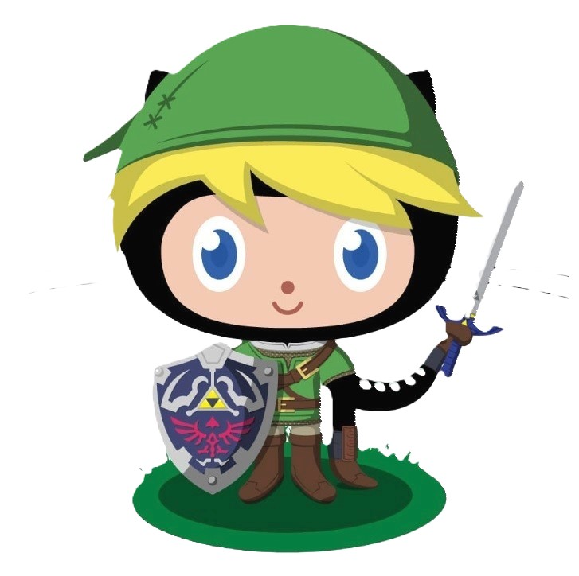

- All About Github
- Q. What is a version control system?
- A. A system that tracks changes to a file or set of files over time
- Q. What is Git?
- A. Git is a DevOps tool used for source code management
- Q. What is Github?
- A. Github is a developer platform that allows developers to create, store, manage and share their code.
- Q. What is the difference between Git and Github?
- A. Git is a version control system that allows developers to track changes in their code. Github is a web-based hosting service for git repositories.
- Q. Who started Github and how was it started?
- A. Github was started by Chris Wanstrath, P.J. Hyett, Tom Preston-Werner, and Scott Chacon. Github was started as a fun weekend project they worked on in 2008.
- Q. What company owns it now?
- A. Microsoft is the current owner of Github
- Q. How much does a Github account cost?
- A. A Github account is free! Though there are paid plans for extra content available.
- Q. What is the Octocat?
- A. Github's mascot an anthropomorphized "octocat" with five octopus-like arms
- Git/Github Terms:
- repository: A central location in which data is stored and managed
- commit: Record changes to one or more files in your branch.
- fork: A new repository that shares code and visibility settings with the original "upstream" repository.
- pull: Command used to fetch and download content from a remote repository and immediately update the local repository to match that content
- push requests: How you transfer commits from your local repository to a remote repo.
- workflows: A configurable automated process that will run one or more jobs.
- issues: Items you can create in a repository to plan, discuss and track work.
- raw button: Allows you to view or copy the raw content on a file without and styling.
- blame button: Used to examine the contents of a file line by line and see when each line was last modified and who the author of the modifications was.

|